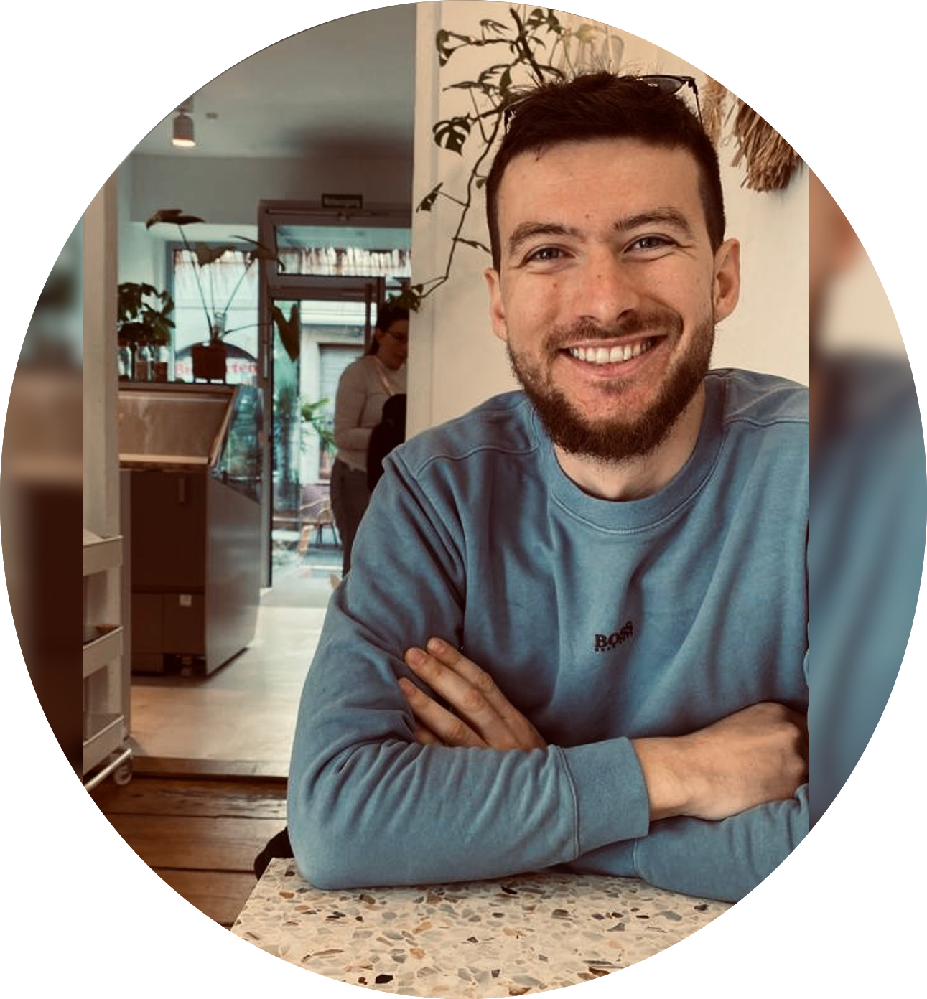

I am a Research Scientist within the AI for Climate Impact team at IBM Research Europe. In my role, I am leading projects on multimodal generative modeling and am co-leading IBM Research's activities on deep learning for planetary observations. I especially focus on pretraining and scaling multi-modal deep learning models in collaborations with NASA, ESA, and within the EU Horizon program. In addition, I'm co-leading work at the intersection of deep learning and quantum graph optimization.
My work on deep learning for planetary observations and weather modeling has been awarded with the NASA Agency Group Award, NASA Marshall Space Flight Center Honor Award, several IBM accomplishment awards, and was featured in international and national media. As part of my work, I am fortunate enough to co-supervise several exceptionally bright Ph.D. students at ETH Zurich and Trinity College.
